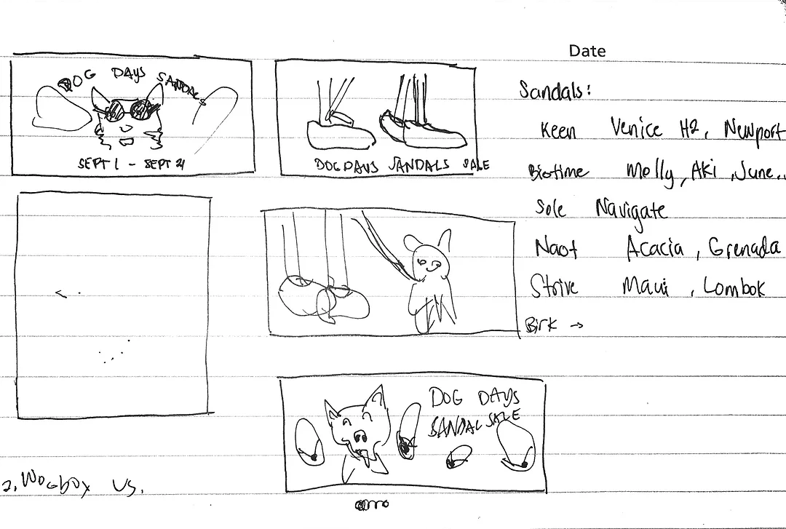
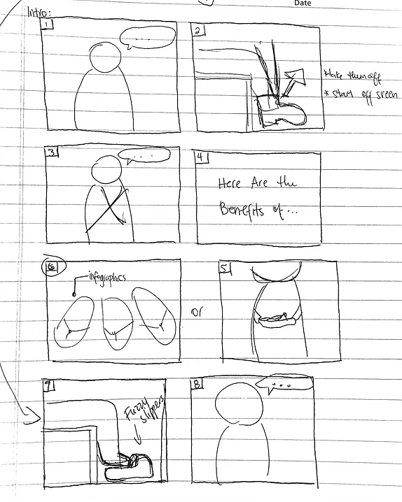
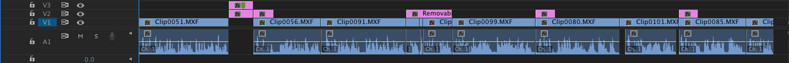

Marketing Graphics + Video
Kintec Footwear + Orthotics
Graphic Design + Videography

What is Kintec?
Kintec Footwear + Orthotics, as the name suggests, is a company that deals with footwear and orthotics. It was founded in 1991 and is one of the premier footwear stores in Canada. However, Kintec does not exist to just sell footwear, it exists to “[help] people stay active for life”, and this is what differentiates the company from other big footwear stores like Sportchek. At Kintec, I work closely with the marketing team that plans and produces the different campaigns that promote and drive sales of Kintec’s products and services. Additionally, the team deals with carrying out promotional strategies that will track and predict what customers care for in their products or the services they receive.
Projects Overview
As one of the graphic designers at Kintec, my responsibilities include creating online graphics and newspaper ads for a number of marketing campaigns, such as our recent Halloween Sale and the upcoming "Unboxing Week" Sale. I am also responsible for filming and editing several videos with topics that usually include “How To’s”, shoe reviews, and information about medical conditions related to the foot. The main goal of these projects is to drive and increase company sales while assisting company clients by giving them tips and advice on how to stay active on their feet for life.
Online Graphics
The following online graphics created for Kintec were used as shop site banners, email headers, Instagram posts, and Facebook posts/ads. Creating these graphics usually involves two steps: 1.) reviewing the campaign sheet on Google Sheets to look for the products featured for the duration of the sale and the strategies that will be used for this campaign to be successful, and 2.) taking photos of the featured products and manipulate them to fit the overall look of the graphics.
PROCESS
DOG DAYS SANDAL SALE
This campaign ran at the end of Summer, thus its name, and one of the strategies for this particular sale is to create a contest where customers can enter a photo of their dog for a chance to win a gift voucher. After reviewing the campaign sheet, I was able to find a stock photo of a dog lying on the grass with sunglasses on, matching one of our initial ideas for the campaign branding.
SKETCHES
Shown on the left are early sketches to visualize how I could incorporate the featured products with the stock photo of a dog. I also like to list the different products that would/could be featured in this campaign. This would make it easier for me to carry around when gathering the different products when taking photos.
Shown on the left are early sketches to visualize how I could incorporate the featured products with the stock photo of a dog. I also like to list the different products that would/could be featured in this campaign. This would make it easier for me to carry around when gathering the different products when taking photos.
FINALIZED GRAPHICS
Using Adobe Illustrator, I placed the image from Photoshop on a separate layer to act as a background, creating different artboards with different dimensions that correspond to which platform each graphic will be used. Finally, the title of the campaign, together with the appropriate sub-headlines is added to finalize the graphics.
EXTRA: HALLOWEEN SALE GRAPHICS
Adding adjustment layers to match the stock photos lighting, and give realistic shadows beneath each product.
FINALIZED GRAPHICS
VIDEO STRATEGIES + MOTION GRAPHICS
When I started my co-op workterm with Kintec, the marketing team has recently looked into video marketing strategies to educate Kintec’s customers about its products and services. I film and edit all these videos every other week. Topics usually include “How To’s”, shoe reviews, and information about medical conditions related to the foot. We have recently decided to change the processes involved in planning these videos to include storyboarding and a team meeting before filming, as opposed to just having a script and experimenting with shots on the day of filming. These videos are posted online at Kintec’s social media platforms and have increased customer engagement.
PROCESS
STORYBOARDING
I meet with the content coordinator, who writes the scripts, to go over the topic for each videos. During these meetings, we create a rough story board that lays out each scene on the video and figure out what kind of shot would be best to match the dialogue for each scene. This process also helps us save time, as it allows us to visualize what kind of a-rolls or b-rolls we need for each scene ahead of time.
EDITING
After filming, I review the files and import them to a folder on the drive. Most of the editing happens inside Adobe Premiere Pro CC where the video files are imported, trimmed, and edited together. Title clips are also added to the sequence during this process to help guide the audience on understanding the topic of the video. The built-in plugin, Lumetri Color, is used for colour correction as it gives me the most control in adjusting certain details such as highlights and contrast.
RECENT VIDEOS
After editing and reviewing each video, they are hosted on YouTube and Wistia (professional video hosting site). These are also posted as Facebook ads to reach our intended demographics or featured on emails that are intended to specific group of customers.
MAIN TAKEAWAYS
Working as a graphic design at Kintec has acquainted me with marketing and the design industry. It allowed me to utilize the skills I gained from previous courses, such as IAT 244: Introduction to Photography I and IAT 202: New Media Images. Working with the marketing team has improved my time-management and communication skills by following tight campaign deadlines and writing emails to different company staff for any inquiries I may have. Ultimately, my responsibilities and projects at Kintec made me consider taking more media courses in the future to learn and improve my working knowledge on producing videos.